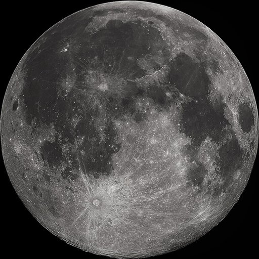

คืนเพ็ญเดือนสิบสอง · ขึ้น 15 ค่ำ
ลอยกระทง ๒๕๖๙
ลอยแล้ว – ใบ · ไม่มีขยะลงแม่น้ำ
ขอบเขตประเทศจาก Natural Earth
แตะวัสดุบนโต๊ะแล้วลากเพื่อย้าย

คืนเพ็ญเดือนสิบสอง · ขึ้น 15 ค่ำ
ลอยแล้ว – ใบ · ไม่มีขยะลงแม่น้ำ
แตะวัสดุบนโต๊ะแล้วลากเพื่อย้าย